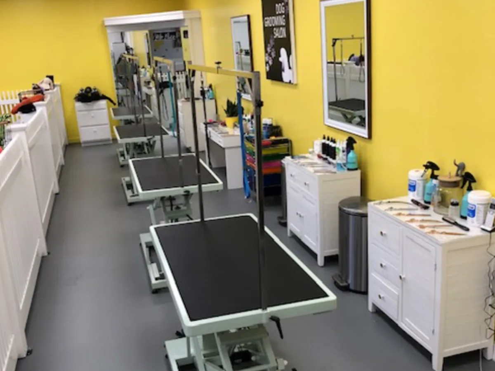

Dog Grooming
From $30
Baths, breed-specific clips, hand-stripping, nails, ears and teeth, using gentle hypoallergenic products suited to every skin type. You are given a dedicated groomer who talks through your dog’s coat before anything starts.
Grooming & full price list